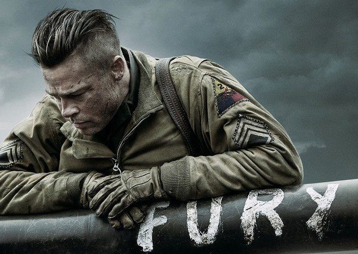

Durante o final da Segunda Guerra Mundial, o sargento Don Wardaddy lidera um grupo de apenas cinco soldados norte-americanos encarregado de aniquilar os nazistas. Em um tanque de guerra Sherman, os homens enfrentam uma missão mortal. Apesar da desvantagem numérica, falta de armas e um soldado inexperiente, Wardaddy e seus homens se movimentam em um ataque espetacular no coração da Alemanha nazista.
